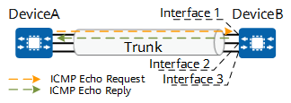

Using Ping to Test the Reachability of Layer 3 Trunk Member Interfaces
Context
You can perform a ping operation to test the reachability of a Layer 3 trunk member interface in order to determine whether the interface link is faulty.
A trunk interface is a logical interface comprised of multiple physical interfaces (known as member interfaces) bundled together. The transmission path of each trunk member interface varies, and consequently the RTT, jitter, and packet loss rate of member interfaces also vary. As such, it is not possible to determine which member interface is faulty when the quality of a service on a trunk interface deteriorates. To resolve this problem, you can use ping to test the reachability of trunk member interfaces.

This method applies to scenarios where the source and destination are directly connected through a trunk interface.
The fundamentals for using ping to test the reachability of trunk member interfaces are as follows:
To monitor the end-to-end link status of a trunk member interface, ensure that ICMP Echo Request and ICMP Echo Reply messages are sent through the link of this trunk member interface. This means that on the destination, an ICMP Echo Reply message is sent to the source through the interface that receives the ICMP Echo Request message.
The following uses the ping operation to test the reachability of interface 1 (a trunk member interface) on DeviceB as an example. The packet exchange process is as follows:
- A ping operation is initiated on DeviceA (source) to send ICMP Echo Request messages to interface 1 on DeviceB (destination).
- DeviceB receives the ICMP Echo Request messages through interface 1, and then sends ICMP Echo Reply messages to DeviceA through the same interface.
- DeviceA receives the ICMP Echo Reply messages, indicating that DeviceA can communicate with interface 1 on DeviceB.

Procedure
- Enable the Layer 3 trunk member interface check function on the destination.
- Ping a Layer 3 trunk member interface from the source to test the interface reachability.
ping [ ip ] { [ -c count | -i { interface-name | interface-type interface-number } | -nexthop nexthop-address | { -range [ min min-value | max max-value | step step-value ] * | -s packetsize } | -t timeout | -m time | -a source-ip-address | -h ttl-value | -p pattern | { -tos tos-value | -dscp dscp-value } | { -f | ignore-mtu } | -q | -r | -vpn-instance vpn-instance-name | -v | -name | -system-time | -ri | -8021p 8021p-value | -detail ] * host [ ip-forwarding ] }
Example
Perform a ping operation to test the reachability of a Layer 3 trunk member interface.
<HUAWEI> ping -a 192.168.1.1 -i Eth-Trunk 1 10.1.1.2
PING 10.1.1.2: 56 data bytes, press CTRL_C to break
Reply from 10.1.1.2: bytes=56 Sequence=1 ttl=255 time=170 ms
Reply from 10.1.1.2: bytes=56 Sequence=2 ttl=255 time=30 ms
Reply from 10.1.1.2: bytes=56 Sequence=2 ttl=255 time=30 ms
Reply from 10.1.1.2: bytes=56 Sequence=2 ttl=255 time=50 ms
Reply from 10.1.1.2: bytes=56 Sequence=2 ttl=255 time=50 ms
--- 10.1.1.2 ping statistics ---
5 packet(s) transmitted
5 packet(s) received
0.00% packet loss
round-trip min/avg/max = 30/66/170 ms
The command output contains the following information:
Response to each test packet: If no ICMP Echo Reply message is received before the timer on the source expires, the message "Request time out" is displayed. If an ICMP Echo Reply message is received, information such as the packet payload, packet sequence number, and response time is displayed.
Final statistics: This information includes the numbers of sent and received packets; the packet loss rate; and the minimum, maximum, and average response times.